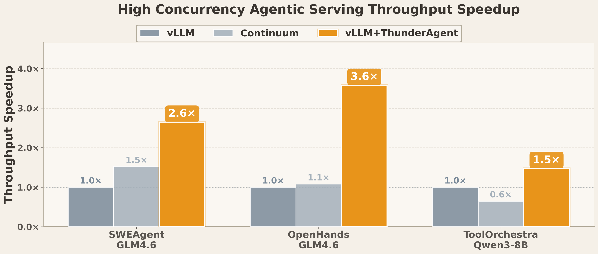
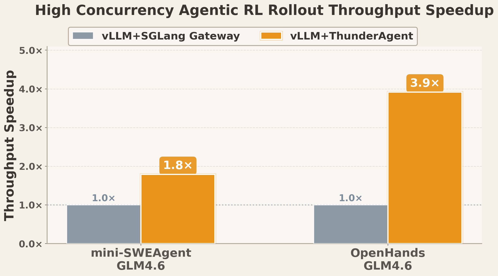

THUNDER
A Fast, Simple, and Robust Program-Aware Agentic Inference System
1.5-3.9×
Inference Throughput
2
Lines of Code to Integrate
4.2×
Disk Memory Savings
// Section 1: Fast, Simple, and Robust
1.5-3.6×
Serving Throughput
Improvement
We evaluated multiple agentic workflows on a single 8×H100 node, ranging from mini-SWEAgent and OpenHands — which have lightweight and predictable tool calls — to ToolOrchestra, which involves long and unpredictable remote API tool calls. Results show that ThunderAgent improves vLLM throughput across agentic serving scenarios by 1.5–3.6×.

1.8-3.9×
RL Rollout Throughput
Improvement
We evaluated mini-SWEAgent and OpenHands on 2 8×H100 nodes. Results show that ThunderAgent improves vLLM throughput across agentic RL rollout scenarios by 1.8–3.9×.
